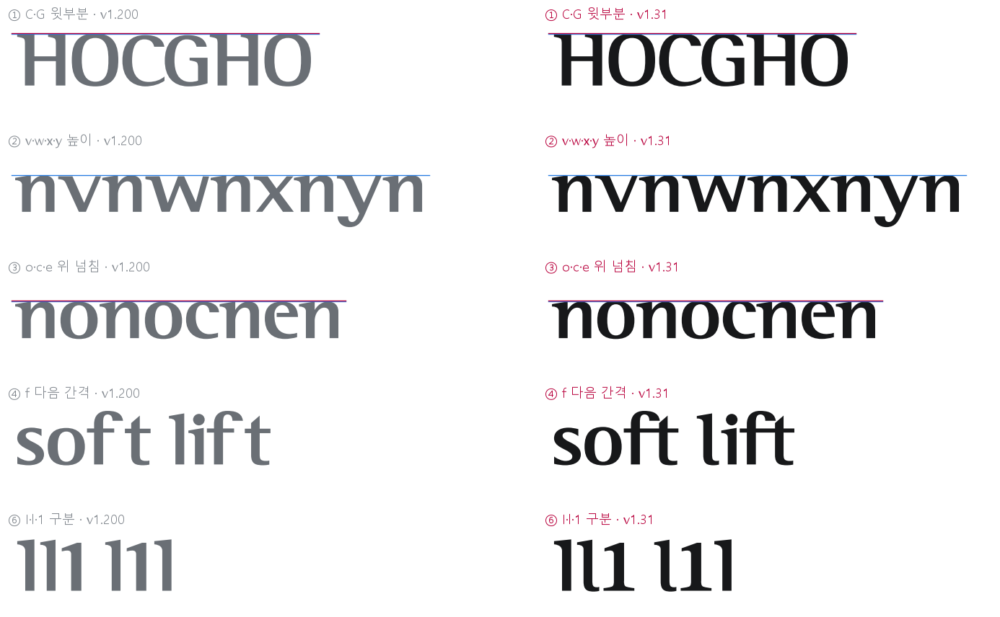
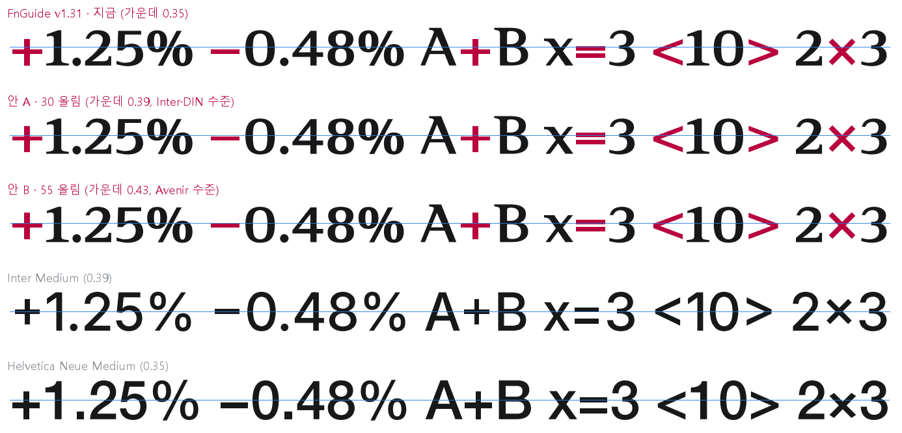
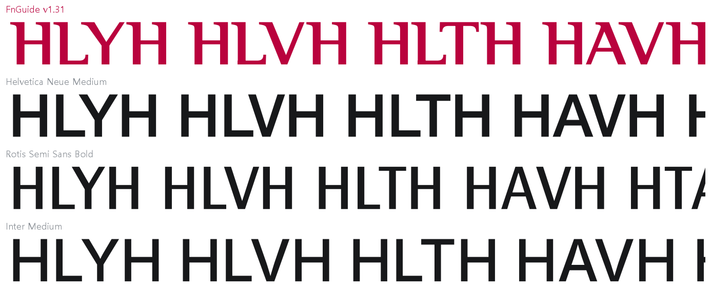
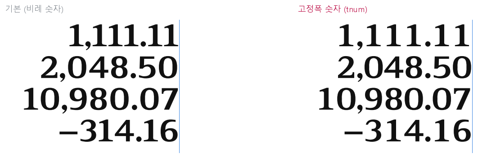
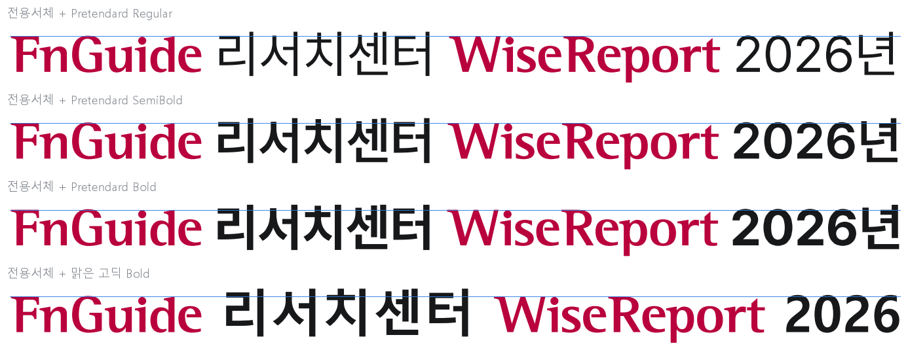
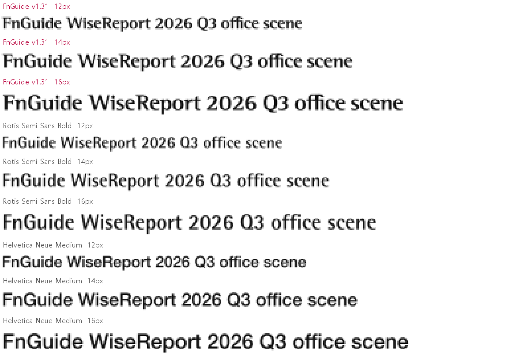

참여: 타이포그래픽 디자이너 · CI/BI 그래픽디자이너 · PM급 브랜드 디자이너(1차의 웹 디자이너 대신) · 사용자(서체 관리자) 의견 1건 포함 · 대상: out/font-update/v1.31 · 1차 보고서: v1.200 크리틱
이 보고서의 전문가 3인은 AI가 각 분야의 관점을 나눠 맡아 쓴 것입니다. 실제 디자이너의 검수를 대신하지 않습니다. 모든 의견에 서체 파일을 직접 잰 수치와 그림을 붙였습니다(수치: metrics-v1.31.json, metrics-v1.31-symbols.json). 서체가 사내 전용이므로 이 문서는 내부에서만 봐 주세요. 이번 회차에서는 서체 파일을 고치지 않았습니다. 개선안은 이 보고서에만 실었습니다.
1. 한눈에 보기
1차의 수정 필요 5건은 모두 고쳐졌습니다. 수치로 확인했습니다. 글자 모양은 이제 "다듬는 단계"를 지났습니다. 이번 회차에는 두 가지가 새로 나왔습니다.
사용자(서체 관리자) 의견: + − = < > 같은 기호가 낮게 앉아 보입니다. 전문가 3인 모두 기호를 올리는 데 동의했습니다.
PM급 브랜드 디자이너: 글자 모양보다 "직원들이 어디서, 어떻게 쓰고, 어떻게 관리하나"를 봤습니다. 사외 유출 관리, 버전 관리, 한글 짝 서체 같은 운영 과제를 짚었습니다.
2건수정 필요 — 수학 기호 높이(사용자 의견), 서체 파일에 사내 전용·사용 조건 문구 넣기
6건개선 권장 — 대각선 간격, woff2, 보고서용 기호, 한글 짝·최소 크기 규칙, 버전 관리, 로고 전환 순서
5건유지 — 1차 수정 5건 결과, 1·l 구분, 대문자–숫자 간격, 고정폭 숫자, 깃발·굵기 차이 성격
전문가 총평
타이포그래픽 디자이너
높이 정렬, f 이어 쓰기, 1·l 구분이 모두 해결됐습니다. 이제 글자 하나하나보다 "기호와 숫자의 자리"가 남은 과제입니다. 기호 높이는 사용자 지적이 맞습니다. 이 서체는 숫자·대문자 옆에서 쓰는 일이 많으니 기호 기준을 소문자 가운데에서 숫자 쪽으로 옮겨야 합니다.
CI/BI 그래픽디자이너
고친 뒤에도 깃발 세리프와 굵기 차이라는 정체성이 그대로입니다. v1.3에서 함께 바뀐 로고 17종은 서비스별로 차례대로 바꿔 나가면 됩니다.
PM급 브랜드 디자이너
서체 품질은 충분합니다. 이제 위험은 운영에 있습니다. 파워포인트에 서체를 포함해 저장하면 서체가 그대로 회사 밖으로 나갈 수 있습니다. 버전이 달라도 서체 이름이 같아 어떤 버전이 깔렸는지 알 수 없습니다. 둘 다 비용이 거의 들지 않으니 먼저 하자고 제안합니다.
2. 결론과 개선안
반영 (2026-11-02): ❶ 기호 높이(B안으로 결정, 그 밖의 낮은 기호 포함)·❷ 포함 금지·사용 조건 문구·❸ 대각선 간격(Avenir Next Demi 비율로 결정 — Inter 비율은 너무 촘촘하다는 검토 의견으로 바꿈)·❹ woff2·❺ 보고서용 기호 8개를 v1.32에 넣었습니다. ₩ 왼쪽 위 세리프도 함께 없앴습니다. ❻ 한글 대용 서체는 Pretendard Medium으로 사용 규칙에 넣었습니다.
등급
무엇을
근거
수정 필요
❶ 수학 기호(+ − ± = < > × ~)를 30 올림 — 안 A (사용자 의견)
가운데 높이가 대문자의 0.35로, Inter·DIN(0.39)보다 낮음. 숫자 가운데보다 76 아래
수정 필요
❷ 서체 파일 이름표에 사용 조건(사내 전용·외부 배포 금지·담당 부서) 넣기
사용 조건 칸(name 13·14)이 비어 있음. 저작권 한 줄만 있음
개선 권장
❸ LY·LV·LT 대각선 간격을 줄임 (1차 ⑧ 그대로 남음)
8쌍이 같은 최대치(−257/1000). LY 잉크 간격이 HH의 3.9배(해외 서체 1.0~1.7배)
개선 권장
❹ woff2 파일 추가 (1차 ⑩)
계산해 보니 10.2KB. woff 13.5KB보다 24% 작음
개선 권장
❺ 보고서용 기호 추가: ▲ ▼ ° ‰ … — ™ ®
증감 표시, 상표 표기에 쓰는데 없어서 다른 서체로 바뀌어 섞임
개선 권장
❻ 사용 규칙: 한글 짝 서체(Pretendard SemiBold / 맑은 고딕 Bold), 최소 16px (1차 ⑦⑪)
같은 글자 크기에서 대문자 높이 0.70 대 0.71, 기둥 굵기 비 1.03
개선 권장
❼ 버전 관리: 받는 곳을 한 군데로, 사용 규칙에 버전 확인법 적기
v1.200·v1.3·v1.31 서체 이름이 모두 "FnGuide Logotype"으로 같음
개선 권장
❽ 로고 17종 서비스별 전환 순서 정하기
v1.3에서 C·G·o·c·e 높이 변화로 17종이 바뀜
유지
1차 수정 5건 결과 · 1·l 구분 · 대문자–숫자 간격(519쌍) · 고정폭 숫자 · 깃발·굵기 차이 성격(⑦ 가로획은 서체 대신 규칙으로)
수치 확인 완료. 아래 3장
3. 1차 이후 바뀐 것 — 수치 확인

그림 50 · 왼쪽 v1.200, 오른쪽 v1.31. 파란 선 = 기준 높이, 빨간 선 = 넘침 높이
1차 지적
v1.200
v1.31
판단
① C·G 윗부분 (O = 711)
688
711
해결
② v·w·x / y 높이 (n = 500)
485 / 491
500 / 500
해결
③ o·c·e 위 / 아래 넘침
0 / −12
+12 / −12
해결
④ f 다음 간격 (soft·lift)
구멍 146
ft 합자
해결. fj·ffi도 합자
④ ty · rv 보정
+20 / +20
0 / 0
해결. 잉크 간격 6으로 가깝지만 닿지 않음
⑤ Windows 위쪽 높이 / Regular 표시
850 / 없음
870 / 있음
해결 (가장 큰 글자 863)
⑥ 숫자 1 · 소문자 l
같은 모양
받침 · 꼬리
해결
⑦ o 위쪽 ÷ 옆 두께
0.36
0.37
그대로 → 규칙으로(❻)
⑧ 대각선 쌍 최대치 −257
8쌍
8쌍
그대로 → ❸
⑨ 고정폭 숫자 · 금융 기호
없음
tnum · ₩ − ± × ·
해결 (그림 54)
⑩ woff2
없음
없음
그대로 → ❹
대문자–숫자 간격 (H0)
142
117
v1.31에서 519쌍 보정. HO 88과 차이 줄어듦
1차 보고서의 "소문자 높이 ÷ 대문자 높이 0.69"는 x 글자(484)로 잰 값이었습니다. ②에서 x가 500이 되어 지금은 0.71입니다. n 기준으로는 처음부터 0.71이었습니다. 굵기 차이(H 0.50, O 0.46)와 기둥 비율(0.93)은 1차와 같습니다.
4. 쟁점별 토론
1차와 같이 3라운드로 진행했습니다: 첫인상 → 쟁점별 → 종합. 아래는 2라운드 쟁점별 기록이고, 1·3라운드는 1장 총평과 5장에 정리했습니다.
A. 수학 기호 높이 — 사용자 의견 수정 필요
사용자(서체 관리자) — +, −, =, <, > 같은 특수문자가 다른 서체에 비해 아래에 낮게 있는 것이 좋아 보이지 않는다. 고치고 싶다.

그림 55 · 파란 선 = 대문자 높이의 절반. 위에서부터 지금 / 안 A(30 올림) / 안 B(55 올림) / Inter / Helvetica. 대문자 높이를 똑같이 맞춤. 안 A·B는 시안 그림이며 서체 파일은 그대로
기호 가운데 높이 ÷ 대문자 높이
+ = < >
− (빼기)
- (하이픈)
바닥
FnGuide v1.31
0.35
0.36
0.36
기준선에 붙음
Helvetica Neue · Rotis · Futura
0.34~0.36
0.34~0.36
0.37~0.43
붙음
Inter · DIN · Candara
0.38~0.39
0.38~0.39
0.39~0.42
Inter는 0.06 띄움
Avenir Next
0.43
0.43
0.35
—
타이포 — 수치로 보면 지금 높이(0.35)가 틀린 값은 아닙니다. Helvetica·Rotis처럼 기호를 소문자 가운데(x 높이 500의 절반 = 250, 지금 + 가운데 245)에 맞춘 옛 방식입니다. 그런데 이 서체는 소문자 문장보다 "+1.25%", "A+B", "Q3"처럼 숫자·대문자 옆에서 훨씬 많이 쓰입니다. 숫자 가운데는 321인데 + 가운데는 245로 76 아래입니다. 그래서 낮게 앉아 보입니다. 사용자 지적이 맞습니다. 요즘 화면용 서체(Inter·DIN)는 0.39 쪽으로 올렸습니다.
CI — 그림 55 첫 줄의 "A+B"를 보면 +가 대문자 사이에서 가라앉아 있습니다. 증감 표시 "+1.25%"에서도 부호가 숫자보다 무거워 보입니다. 브랜드 서체는 숫자와 기호가 한 덩어리로 보여야 합니다. 안 A를 지지합니다. 안 B(Avenir 수준)는 "x=3"처럼 소문자 옆에서 기호가 떠 보입니다.
PM — 해외 서체에는 대문자 옆에서 기호를 자동으로 올리는 기능(case)이 있습니다. 하지만 파워포인트·엑셀은 이 기능을 켜는 메뉴가 없습니다. 직원 대부분은 오피스로 쓰니 기본 위치 자체를 올리는 것이 실제로 효과가 있습니다. 비용도 작습니다. 기호 8개를 위로 옮기기만 하면 되고, 글자 폭과 간격은 그대로입니다.
타이포 — 안 A로 하면 대상은 + − ± = < > × ~ 8개와 고정폭 숫자용 +·−·± 3개입니다. 하이픈(-)은 단어를 잇는 글자라 소문자 가운데가 맞습니다. 이번엔 그대로 둡니다. 다만 엑셀에서 음수는 하이픈으로 찍히므로, 표에서 어떻게 보이는지는 시안 서체로 확인하겠습니다. 바닥은 Inter처럼 기준선에서 띄워지니 "붙어 앉은" 인상도 함께 줄어듭니다.
합의: 수정 필요. 안 A(30 올림 → 가운데 0.39, Inter·DIN 수준)를 추천합니다. 최종 높이와 하이픈 포함 여부는 시안 서체를 만들어 사용자와 디자이너가 눈으로 정합니다. 다음 버전은 v1.32 정도로 추측합니다.
B. 사외 유출 관리 — 서체 파일 설정 수정 필요결정 필요
항목
지금
뜻
포함 허용 값 (fsType)
8 — 편집 가능 포함
파워포인트·워드에서 "파일에 글꼴 포함"으로 저장하면 서체가 파일 안에 들어가고, 받는 쪽에서 편집까지 됩니다
사용 조건 (name 13·14)
비어 있음
설치 화면·글꼴 정보에 "사내 전용"이 보이지 않습니다
저작권 (name 0)
Copyright (c) 2026 FnGuide
있음
PM — 협력사나 고객에게 파워포인트를 보내는 일이 많습니다. 지금 설정에서는 "글꼴 포함"으로 저장하면 서체가 함께 나갑니다. 선택지는 셋입니다. ① 8 그대로 두고 규칙으로 막기, ② 4(미리보기·인쇄만): 받는 쪽은 보기만 하고 편집은 못 합니다, ③ 2(포함 금지): 받는 쪽에는 다른 서체로 보입니다. 사내 공동 편집에 영향이 있으니 사용자가 정할 일입니다. 반면 사용 조건 문구는 위험 없이 바로 넣을 수 있습니다.
CI — 외부로 나가는 자료의 로고는 서체가 아니라 SVG·PNG 그림을 쓰는 것이 원칙입니다. 사용 규칙에 한 줄 넣읍시다.
타이포 — 문구는 서체 모양과 무관합니다. 다음 버전을 만들 때 함께 넣으면 됩니다.
합의: 사용 조건 문구(사내 전용·외부 배포 금지·문의: 웹&모바일팀 디자인 파트)는 수정 필요. 포함 허용 값(8 / 4 / 2)은 사용자가 결정합니다.
사용자 결정 (2026-11-02): 포함 허용 값은 2(포함 금지)로 해서 파워포인트 파일에 글꼴이 포함되지 않게 합니다. 사용 조건에는 "에프앤가이드 고유의 한글 글꼴까지 포함된 폰트가 완성되기 전까지 사내에서만 사용합니다."라고 표시합니다. 다음 버전(v1.32)에 함께 넣습니다.
C. 대문자 대각선 쌍 간격 (1차 ⑧) 개선 권장

그림 51 · HLYH HLVH HLTH HAVH HTAH HToH. 대문자 높이를 맞춤
가장 가까운 잉크 간격 (대문자 700 기준, 어림 지표)
HH
LY
LV
VA
LY ÷ HH
FnGuide v1.31
56
220
188
86
3.9배
Helvetica Neue
144
157
112
174
1.1배
Rotis Semi Sans
161
165
170
225
1.0배
Inter
149
250
212
215
1.7배
타이포 — 대문자끼리를 로고 리듬에 맞춰 −55로 조였기 때문에 HH가 아주 좁습니다. 그 옆에서 LY·LV는 상대적으로 크게 벌어져 보입니다. 반대로 VA는 86으로 꽤 붙었습니다. 쌍마다 차이가 큽니다. 8쌍이 똑같은 최대치에 걸려 있는 것도 여전합니다.
CI — 대문자만 쓰는 제목("LTV", "FLY")에서 보입니다. 로고 모양에는 영향이 없도록 대각선 쌍만 고칩시다.
PM — 대문자 제목은 자주 쓰지 않습니다. 기호 높이를 고칠 때 함께 하면 추가 비용이 작습니다.
합의: 개선 권장. 다음 버전에서 기호 수정과 함께, LY·LV·LT·Yo·To를 눈으로 보며 줄입니다. 잉크 간격은 빈 공간의 넓이를 다 반영하지 못하는 어림 지표입니다.
D. 서체를 어디까지 쓰나 — 보고서용 기호 개선 권장

그림 54 · 오른쪽 맞춤 표. 왼쪽 기본(비례 숫자)은 자릿수 위치가 흔들리고, 오른쪽 고정폭 숫자(tnum)는 맞음
PM — v1.3에서 ₩ − ± × · 와 고정폭 숫자가 들어와 표에 쓸 수 있게 됐습니다(그림 54). 그런데 금융 보고서에 자주 나오는 ▲ ▼(증감), ° ‰, … —(제목·문장), ™ ®(상품 이름)가 아직 없습니다. 없는 글자는 오피스가 다른 서체로 바꿔 찍어 한 줄 안에서 모양이 섞입니다. 그리고 고정폭 숫자는 워드에서는 켤 수 있지만, 파워포인트·엑셀에는 켜는 메뉴가 없는 것으로 압니다(확인 필요). 표가 많은 자료는 아직 본문 서체로 쓰는 게 현실적입니다.
타이포 — ▲ ▼ ° … 는 모양이 단순해 비용이 작습니다. ™ ® 는 작은 글씨라 따로 다듬어야 합니다.
CI — 1차에서 결정을 미룬 "서체 사용 범위"를 이제 정해야 합니다. 로고·제목 전용이면 이 항목은 보류해도 됩니다.
합의: 개선 권장. 1순위 ▲ ▼ ° … —, 2순위 ‰ ™ ®. 서체 사용 범위 결정에 따릅니다.
E. 한글과 섞어 쓰기, 작은 크기 (1차 ⑦⑪) 개선 권장

그림 53 · 같은 글자 크기에서 한글 서체 굵기만 바꿈. 파란 선 = 전용서체 대문자 높이
한글 서체 (같은 글자 크기)
영문 대문자 높이
전용서체 기둥 ÷ 이 서체 기둥
판단
Pretendard Regular
0.707
1.49
한글이 너무 가늘어 보임
Pretendard SemiBold
0.707
1.03
굵기 거의 같음 — 웹·문서 추천
Pretendard Bold
0.707
0.89
한글이 더 굵음
맑은 고딕 Bold
0.719
0.96
오피스 기본 짝으로 적합
(전용서체)
0.700
—

그림 52 · 12·14·16px 화면 픽셀(3배 확대). 12px에서 o·e·c 위쪽이 흐려지는 것은 1차와 같음
CI — 1차에서 "한글 짝을 정하자"고만 했습니다. 이번에 재 보니 같은 글자 크기에서 대문자 높이가 거의 같아서 크기 보정이 필요 없습니다. 굵기는 Pretendard SemiBold가 가장 가깝습니다(1.03).
PM — 직원 PC에 Pretendard가 없을 수 있습니다. 오피스 문서는 맑은 고딕 Bold, 웹·디자인 작업은 Pretendard SemiBold로 두 줄만 적읍시다. 또 이 서체의 TTF에는 작은 크기용 보정 정보(힌팅)가 없습니다. Windows에서 작게 쓰면 흐려지기 쉽습니다. 그래서 o 위쪽을 두껍게 고치기(⑦)보다 최소 16px(문서 12pt) 규칙이 비용 대비 효과가 큽니다.
타이포 — 동의합니다. 가는 가로획은 이 서체의 성격이니 유지하고, 규칙으로 쓰는 범위를 좁히는 쪽이 맞습니다.
합의: 개선 권장. 사이트 "사용 규칙"에 한글 짝 서체 2종과 최소 크기를 적습니다. ⑦ 가로획 수정은 보류합니다.
F. 버전 관리와 웹 파일 (1차 ⑩) 개선 권장
항목
v1.200
v1.31
서체 이름 (오피스 글꼴 목록에 보이는 이름)
FnGuide Logotype
FnGuide Logotype — 같음
버전 표시 (name 5)
Version 1.200
Version 1.31
파일 크기 OTF / TTF / woff / woff2(계산)
18.8 / 21.8 / 11.8 / 9.3 KB
22.8 / 26.3 / 13.5 / 10.2 KB
PM — 버전이 달라도 글꼴 목록 이름이 같습니다. 옛 버전이 깔린 PC에서 연 문서는 C·G 높이, 1·l 모양, 숫자 간격이 조용히 달라집니다. 이름을 버전마다 바꾸면 문서가 깨지니 그건 안 됩니다. 대신 ① 받는 곳은 사이트의 "서체 다운로드" 단추 하나로 정하고, ② 사용 규칙에 "글꼴 파일 속성에서 버전 1.31 확인" 한 줄을 넣고, ③ 새 버전이 나오면 사내 공지를 하는 정도가 현실적입니다.
타이포 — woff2는 서체 모양과 무관하고 24% 작아집니다. 다음 버전 만들 때 같이 내면 됩니다.
합의: 개선 권장. 버전 확인법은 사용 규칙에, woff2는 다음 버전에서.
G. 로고 전환 순서 개선 권장
CI — v1.3에서 C·G·o·c·e 높이가 바뀌어 로고 17종이 함께 바뀌었습니다. 로고 23종 이름에는 숫자·수학 기호가 없고, LY·LV·LT·To·Yo 같은 대각선 쌍도 없습니다. 그래서 다음 버전(기호 높이·대각선 간격)에서는 로고가 다시 바뀌지 않을 것으로 봅니다. 지금 로고를 그대로 퍼뜨려도 됩니다.
PM — 순서를 제안합니다. ① 사이트 받기 파일 갱신(이미 v1.3) → ② 각 서비스 웹사이트의 로고·파비콘·오픈 그래프 교체(디자인 아티클 메뉴로 바로 만들 수 있음) → ③ 인쇄물은 다시 찍을 때 바꿈. ②는 서비스 담당자와 일정을 맞춰야 합니다.
타이포 — 바뀐 것은 높이 몇 단위라 크게 쓰는 간판·표지부터 확인하면 됩니다.
합의: 개선 권장. 서비스 담당자와 교체 일정을 맞춥니다.
5. 종합 의견과 우선순위
3라운드에서 PM급 브랜드 디자이너가 비용과 효과로 순서를 정리했고, 두 사람이 동의했습니다.
순서
할 일
비용 (어림)
효과
1
사용 규칙 보강: 한글 짝·최소 크기·버전 확인·외부 자료는 로고 그림 사용 (❻❼)
사이트 글 몇 줄
오사용·유출 위험을 바로 줄임
2
다음 버전(v1.32): 기호 높이 안 A ❶ + 사용 조건 문구 ❷ + 대각선 간격 ❸ + woff2 ❹
서체 1회 제작
숫자·기호 인상 개선, 관리 정보 보강
3
보고서용 기호 ❺
글자 5~8개 새로 그림
서체 사용 범위를 넓힐 때만
타이포 — 1차에서 짚은 다듬기는 끝났습니다. 남은 것은 기호의 자리 하나입니다. 사용자의 눈이 정확했습니다.
CI — 정체성은 지켜졌습니다. 다음 버전에서는 로고가 바뀌지 않도록 범위를 기호와 대각선 쌍으로만 묶읍시다.
PM — 서체는 이제 "만드는 일"보다 "쓰게 하는 일"이 큽니다. 규칙과 배포 경로를 먼저 정리하면 다음 버전의 효과도 커집니다.
6. 사용자 결정 필요
기호 높이: 안 A(30 올림, 추천) / 안 B(55 올림) / 그대로. 하이픈(-)도 함께 올릴지
서체 포함 허용 값 → 2(포함 금지)로 결정 (2026-11-02)
서체 사용 범위: 로고·제목 전용 / 표·보고서까지 (1차부터 미정 — ❺의 우선순위가 달라짐)